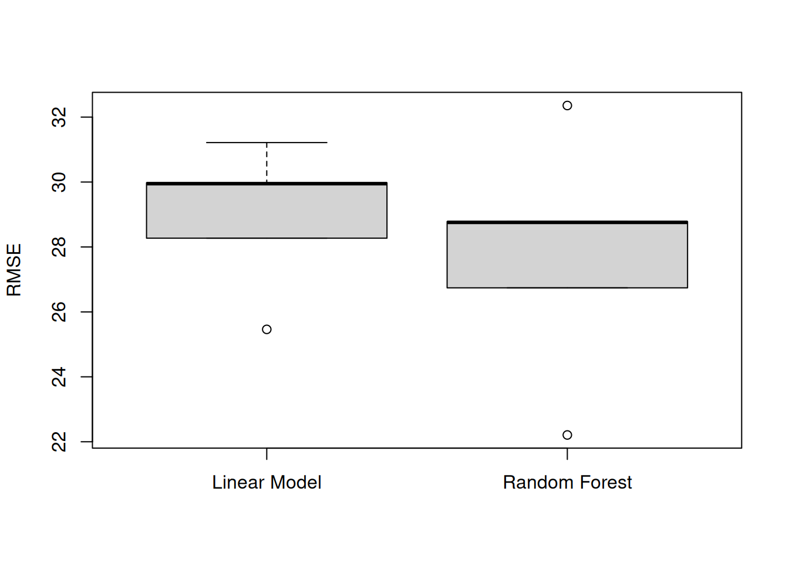

dir.create(path = "data")
dir.create(path = "output")Machine learning in R part 1: regression
An introduction to the concept of machine learning, with a worked application showing model comparison and evaluation of model performance.
Learning objectives
- Explain the difference between machine learning and inferential statistics
- Load tabular data into R
- Build a predictive model and evaluate model performance
- Split data into training and testing sets
- Apply iteration to model evaluation and model selection
Machine learning has been all the rage, but there remains a lot of mystery about what machine learning really is. In this workshop, we will work through an example of how we use machine learning to make predictions and how to assess how good those predictions really are. The material is designed for people who have little to no experience with machine learning.
The setting
So. Taylor Swift. Music phenom. The obvious focus of our machine learning lesson. Let us imagine we are in Taylor’s position of releasing a new album. Before we release the album, we want to start it off by dropping a single. Not just any single, but one that will race up the charts to build the anticipation for the album. This leads to our goal: build a machine learning algorithm, based on Taylor Swift’s released songs, that will predict the billboard position of a new song so Taylor can choose the first single from the album to release.
Getting started
Workspace organization
First we need to setup our development environment. Open RStudio and create a new project via:
- File > New Project…
- Select ‘New Directory’
- For the Project Type select ‘New Project’
- For Directory name, call it something like “ml-regression” (without the quotes)
- For the subdirectory, select somewhere you will remember (like “My Documents” or “Desktop”)
We need to create two folders: ‘data’ will store the data we will be analyzing, and ‘output’ will store the results of our analyses. In the RStudio console:
It is good practice to keep input (i.e. the data) and output separate. Furthermore, any work that ends up in the output folder should be completely disposable. That is, the combination of data and the code we write should allow us (or anyone else, for that matter) to reproduce any output.
Install additional R packages
There are two additional R packages that will need to be installed:
- dplyr
- randomForest
To install these, run:
install.packages("dplyr")
install.packages("randomForest")Example data
The data we are using comes from two sources:
We have a variety of song characteristics from W. Jake Thompson, who assembled the data from Genius and the Spotify API. These data were initially retrieved from the Tidy Tuesday website for October 17, 2023. The song characteristics include measurements of loudness, tempo, and acousticness.
We also have the highest position for Taylor Swift’s released songs. These come from a GitHub project by Ava Scharfstein and Aimi Wen. The authors used Python webscraping tools to retrieve Billboard chart positions for a majority of Taylor Swift songs. They did a bunch of neat analyses and you can check them out on the Project Webpage.
Note that I went ahead and joined these two datasets together. If you want to learn more about that process, see the Bonus Track section at the end of this lesson.
The data are available in a single file at https://bit.ly/swift-data and https://raw.githubusercontent.com/jcoliver/learn-r/gh-pages/data/swift-data.csv (the former just re-directs to the latter). Use a web browser to navigate to one of those URLs and download the file as a plain text or CSV file (on some systems, you can save as an Excel CSV, which is fine, too). Make sure after you download the file that you move it into the “data” folder you created at the beginning of this lesson.
Machine learning in a nutshell
In this lesson, we are going to run through an relatively minimal example of machine learning. The term “machine learning” gets thrown around a lot, often with little explanation, so we will start with a very brief explanation. The big difference between “traditional” statistics and machine learning is the goal of each approach (aside: the modifier “traditional” is in no way meant to imply a lesser status or utility of statistics - I just could not come up with a better term). That is, the statistics we learned in class are generally focused on making inferences about how the world works, i.e. how does \(X\) affect \(Y\)? In contrast, machine learning is less concerned with the details of how \(X\) and \(Y\) are related, but rather focused on using \(X\) to make accurate predictions of \(Y\). If we consider this in a linear regression framework, statistics cares about getting accurate values for the beta hats (\(\hat{\beta}\)) on the right-hand side of the equation, while machine learning cares about being able to make accurate predictions for the Y hats (\(\hat{Y}\)) on the left-hand side of the equation:
\[ \hat{Y} = \hat{\beta}_0 + \hat{\beta}_1 X_1 \]
Aside: Briefly, what we are doing is known as “supervised” machine learning, as opposed to “unsupervised” machine learning. The big difference between the two is that in supervised learning, we have data where we have both the \(X\) values and the \(Y\) values. In unsupervised learning, we only have the \(X\)s. Additionally, we are using machine learning to predict a number; specifically, the billboard position of a song. This type of machine learning is known as regression. This is in contrast to classification machine learning, where we try to predict which categories data points belong to. Check out the Additional resources section below for links to more information.
Building our first machines
We are going to start by creating two different models. One is a common model used in inferential statistics: the linear regression model. The second is a tree-based model, called a random forest. We are not going to get into the details of the models - if you want to learn more, see the references listed in the Additional resources section below.
We will do all of our work in an R script, so start by creating a new script (File > New File > R Script) and saving it as “ml-lesson.R”. At the top of the script, start with a few lines of information for the next human to read the script. We begin these lines with the comment character, #, so R will know to ignore these lines.
# Machine learning on Taylor Swift songs
# Jeff Oliver
# jcoliver@arizona.edu
# 2024-04-02As mentioned above, we will be using two R packages that are not part of the R core program. We used the install.packages() command to install those packages, but to use them we need to load them into memory. That is, even though the dplyr and randomForest packages are installed on our machines, we need to explicitly tell R that we would like to use them. In order to do this, we use the library() command:
library(randomForest)
library(dplyr)We also need to load the data into memory. We will use the data stored in the file that we downloaded earlier in the lesson (see the Example data section, above). We will read the data into memory with the read_csv() function and look at the first few rows with the head() function:
# Read in data
swift_data <- read.csv(file = "data/swift-data.csv")
# Show first six rows of data
head(swift_data) peak_position danceability energy loudness speechiness acousticness
1 1 0.647 0.800 -5.384 0.1650 0.06470
2 13 0.621 0.417 -6.941 0.0231 0.28800
3 16 0.668 0.672 -4.931 0.0303 0.11100
4 1 0.760 0.703 -5.412 0.0540 0.10300
5 2 0.622 0.469 -6.798 0.0363 0.00454
6 12 0.750 0.404 -10.178 0.0682 0.21600
instrumentalness liveness valence tempo explicit mode_name
1 0.00e+00 0.3340 0.9420 160.078 FALSE major
2 0.00e+00 0.1190 0.2890 99.953 FALSE major
3 0.00e+00 0.3290 0.5390 89.011 FALSE major
4 0.00e+00 0.0913 0.5700 95.997 FALSE major
5 2.25e-06 0.0398 0.6790 77.019 FALSE minor
6 3.57e-04 0.0911 0.0499 95.045 FALSE minorLooking at these data, we see the first column is peak_position, which is the highest position the song achieved on the charts. This is the value we want to build an algorithm to predict. The rest of the columns are the song characteristics we will use to predict the highest chart position of the song. So we begin by building our two models, one using linear regression and one using a random forest.
# Run a linear model with all predictors
linear_model <- lm(peak_position ~ ., data = swift_data)
# Run a random forest model with all predictors
rf_model <- randomForest(peak_position ~ ., data = swift_data)In both models, we are using the song data we downloaded, as indicated by data = swift_data. But the first part of each model, the peak_position ~ . part, looks weird. In this case, we are telling R to build a model where the response, or dependent, variable is in the peak_position column and all the remaining columns are to be used as predictor, or independent, variables. We are using the shortcut of the dot, ., which is effectively the same as saying “everything else”. That is, we are telling R to build a model with peak_position as the response, and everything else in the data as predictor variables. Now that we have built the models, we need to compare them to see which one works better at predicting the chart position of a song.
This is me trying
To compare the two models, we need a way to measure how well the models’ predictions for the song position match the actual (observed) position. We have the second part (the actual position each song reached), but we still need to calculate the predicted position for each model. We can do this in R with the predict() function:
# Predict song's peak position based on linear model
linear_prediction <- predict(linear_model, newdata = swift_data)
# Predict song's peak position based on random forest model
rf_prediction <- predict(rf_model, newdata = swift_data)We now have predicted values and observed values. The difference between the two values will provide a measure of how well each model works and we will want to pick whichever model does a better job at predicting. To compare the models we will use the root mean squared error, or RMSE. So just what in the heck in a “root mean squared error”? To define this, we will work backwards in the term:
- error: In this case, error is just the difference between the song’s predicted highest chart position and the actual highest chart position. We have data and predictions for 157 songs, so we will calculate 157 error values;
- squared: We then take each error value and square it. This ensures all values are positive;
- mean: Next we calculate the average value of these squared errors. This gives us a single value for each model;
- root: Finally, we take the square root of that mean value, which effectively transforms the average into a number that we can interpret as “how far off does the model predict the song to appear on the chart.”
If you are more into equations, the RMSE is calculated as:
\[ RMSE = \sqrt{ \dfrac{ \sum{ (y_i - \hat{y_i})^2 } } n } \]
where \(n\) is the number of observations, \(y_i\) is the observed chart position of the \(i^{th}\)song, and \(\hat{y_i}\) is the predicted chart position of the \(i^{th}\)song.
For now, we do not need to worry too much about this math. We need only remember that if a model has a really small RMSE, it means it does a good job at making predictions. If a model has a really big RMSE, it means it does a poor job at making predictions. These values are relative; we can only decide what counts as “small” and counts as “big” when we compare two or more models to one another.
Of course, we do not need to do these calculations by hand, we can do it all in R! Here we will do it in two lines of code: one to calculate the square errors and one to calculate the square root of the mean value.
# Calculate squared errors for linear model
linear_sqerr <- (swift_data$peak_position - linear_prediction)^2
# Calculate rmse for linear model
linear_rmse <- sqrt(mean(linear_sqerr))
# Calculate squared errors for random forest model
rf_sqerr <- (swift_data$peak_position - rf_prediction)^2
# Calculate rmse for random forest model
rf_rmse <- sqrt(mean(rf_sqerr))We can print the values to the console by running lines of code that just have the names of our two RMSE variables, starting with the linear model:
linear_rmse[1] 26.48797Then the random forest model:
rf_rmse[1] 12.3281So, on average, the linear model is off by about 26 spots on the chart, while the random forest model predictions are only 12 spots different from the actual chart position for that song. Hey, that random forest model does a lot better. We are done, right?
This is why we can’t have nice things
Consider, for a moment, an analogy with taking a test. Let us say there are two people taking a test. One person went to class and studied from their notes, while another person did not go to class or take notes, but got ahold of the actual test with the answers and memorized those answers. But the teacher ended up giving the students a test with different questions and answers than the one the second student memorized. Which person would likely score higher? The person who memorized the test would have done great if they had the original test, but could not generalize their memorized answers into a new, slightly different situation. This happens in machine learning, too. Some models are able to effectively “memorize” the answers for a given set of data, but when given a new dataset, have a difficult time making good predictions. For this reason, machine learning is always a two-step process: first, we use a subset of our data to train the model (really, the “learning” part of machine learning) and second, we use the remaining data to test the model. It is the second part, the testing phase, where we can really gauge how well our model will perform on new datasets.
Training and testing split
For our purposes, we will use an 80:20 split, where we use 80% of our data for training the models and 20% of the data for testing the models. We will randomly assign each song into one of five “bins”, reserve one bin of data for testing, and use the remaining four bins for estimating the models. We start with a vector of integers, from 1 to 5, randomly assigned.
# Create fold vector
fold <- rep_len(x = 1:5, length.out = nrow(swift_data))We then use filtering to put any observations not in bin #1 into our training dataset and only observations that are in bin #1 into our testing dataset.
# Split data into training and testing sets
training <- swift_data %>%
filter(fold != 1)
testing <- swift_data %>%
filter(fold == 1)Now that we have those data separated, we will:
- Estimate both models using only the training data.
- Make predictions for both models, using only the testing data.
- Compare the predictions to actual values to see how well each model performs, based on RMSE values.
We can start by just outlining these steps with comments:
# Estimate model with training data
# Make predictions on testing data
# Calculate rmse valuesThen we fill in the first step (model estimation) for our two models. Note this code looks a lot like what we ran earlier, the only change we made is that we are now passing training to the data argument, instead of swift_data:
# Estimate model with training data
linear_model <- lm(peak_position ~ ., data = training)
rf_model <- randomForest(peak_position ~ ., data = training)Next we make predictions, switching out swift_data for testing:
# Make predictions on testing data
linear_prediction <- predict(linear_model, newdata = testing)
rf_prediction <- predict(rf_model, newdata = testing)And in step 3, we calculate the RMSE values to evaluate model performance, also replacing swift_data with testing:
# Calculate rmse values
linear_sqerr <- (testing$peak_position - linear_prediction)^2
linear_rmse <- sqrt(mean(linear_sqerr))
rf_sqerr <- (testing$peak_position - rf_prediction)^2
rf_rmse <- sqrt(mean(rf_sqerr))We can compare the performance of each model by printing the RMSE values to the console:
linear_rmse[1] 31.21477rf_rmse[1] 28.74697So how did the models do? Our original RMSE for the linear model was 26.488, so the model did a little worse (because the RMSE got bigger). The first time we ran the random forest model, the RMSE was only 12.328 which is much lower than the RMSE on testing data. This means the random forest model did quite a bit worse when we asked it to make predictions based on data it had never seen before. The random forest model memorized answers from the test.
This is what you came for
There is one more thing for us to do in evaluating these two models. So far, we split the data into two groups, the training data and the testing data. We put 20% of our data into that testing pile, but really we would like to give each data point an opportunity to be part of the testing dataset. So given our 80/20 split, that means we actually want to do the training/testing process four more times, where each time we use a different 20% of the data as the testing data. We already have the bins setup, but now instead of just using bin #1 as the training data, we will cycle through each of the five bins in turn as the testing data.
We will use a for loop, which allows us to do things multiple times. Here we want to run through this process once for each of the five bins we created. We start with a loop that will run five times, with the variable i taking on the values 1-5. We start by creating the loop with a little reality check to make sure our variable i is being assigned correctly:
for (i in 1:5) {
# Early reality check
print(i)
}[1] 1
[1] 2
[1] 3
[1] 4
[1] 5Now we can add the comments for each step of the training and testing process, as we did above, plus the starting step of splitting data into training and testing sets (we can delete the reality check):
for (i in 1:5) {
# Split data into training/testing
# Estimate model with training data
# Make predictions on testing data
# Calculate rmse values
}We first fill in the part for splitting the data. It looks similar to the code above, but now instead of reserving data from the 1st bin as testing data, we reserve data from the ith bin. Remember that the i variable takes values from 1 through 5, increasing by one each time through the loop.
for (i in 1:5) {
# Split data into training/testing
training <- swift_data %>%
filter(fold != i)
testing <- swift_data %>%
filter(fold == i)
# Estimate model with training data
# Make predictions on testing data
# Calculate rmse values
}Next we train each model with the training data.
for (i in 1:5) {
# Split data into training/testing
training <- swift_data %>%
filter(fold != i)
testing <- swift_data %>%
filter(fold == i)
# Estimate model with training data
linear_model <- lm(peak_position ~ ., data = training)
rf_model <- randomForest(peak_position ~ ., data = training)
# Make predictions on testing data
# Calculate rmse values
}And make predictions from each model with the reserved testing data.
for (i in 1:5) {
# Split data into training/testing
training <- swift_data %>%
filter(fold != i)
testing <- swift_data %>%
filter(fold == i)
# Estimate model with training data
linear_model <- lm(peak_position ~ ., data = training)
rf_model <- randomForest(peak_position ~ ., data = training)
# Make predictions on testing data
linear_prediction <- predict(linear_model, newdata = testing)
rf_prediction <- predict(rf_model, newdata = testing)
# Calculate rmse values
}And finally calculate the model performance by measuring how different predicted values were from actual values.
for (i in 1:5) {
# Split data into training/testing
training <- swift_data %>%
filter(fold != i)
testing <- swift_data %>%
filter(fold == i)
# Estimate model with training data
linear_model <- lm(peak_position ~ ., data = training)
rf_model <- randomForest(peak_position ~ ., data = training)
# Make predictions on testing data
linear_prediction <- predict(linear_model, newdata = testing)
rf_prediction <- predict(rf_model, newdata = testing)
# Calculate rmse values
linear_sqerr <- (testing$peak_position - linear_prediction)^2
linear_rmse <- sqrt(mean(linear_sqerr))
rf_sqerr <- (testing$peak_position - rf_prediction)^2
rf_rmse <- sqrt(mean(rf_sqerr))
}We can look at the scores for each of these five iterations by typing the names of our RMSE variables into the console.
linear_rmse[1] 29.9492rf_rmse[1] 31.83384Uh oh. There is only one value in each variable, but we ran through this process five times. What gives? The problem is that the two variables that hold our RMSE values, linear_rmse and rf_rmse, are over-written each time the loop executes. This means we only have values for the last time through the loop. We need to make sure to store the outcomes each time through the loop. To do this, we will add a pair of results variables that are updated as the loop executes. We will actually use the same names as before, but now we make sure there are five slots in each variable. We add these variables before our loop statement:
linear_rmse <- numeric(5) # variable to store five linear RMSE values
rf_rmse <- numeric(5) # variable to store five random forest RMSE values
for (i in 1:5) {
...And we update the assignment of those variables inside our loop, so we replace linear_rmse with linear_rmse[i] and rf_rmse with rf_rmse[i]:
linear_rmse <- numeric(5)
rf_rmse <- numeric(5)
for (i in 1:5) {
# Split data into training/testing
training <- swift_data %>%
filter(fold != i)
testing <- swift_data %>%
filter(fold == i)
# Estimate model with training data
linear_model <- lm(peak_position ~ ., data = training)
rf_model <- randomForest(peak_position ~ ., data = training)
# Make predictions on testing data
linear_prediction <- predict(linear_model, newdata = testing)
rf_prediction <- predict(rf_model, newdata = testing)
# Calculate rmse values
linear_sqerr <- (testing$peak_position - linear_prediction)^2
linear_rmse[i] <- sqrt(mean(linear_sqerr))
rf_sqerr <- (testing$peak_position - rf_prediction)^2
rf_rmse[i] <- sqrt(mean(rf_sqerr))
}Now when we run the loop and print out values by typing in the name of the variables into the console:
linear_rmse[1] 31.21477 29.97781 28.27053 25.46199 29.94920rf_rmse[1] 28.78247 28.75664 26.74076 22.20949 32.35688To decide which model is preferred, we can compare the mean RMSE values of the models:
mean(linear_rmse)[1] 28.97486mean(rf_rmse)[1] 27.76925We can also visualize these results with a boxplot, to show variation among the five training/testing splits:
boxplot(x = linear_rmse, rf_rmse,
names = c("Linear Model", "Random Forest"),
ylab = "RMSE")
Whew! So, where does that leave us?
This is really happening
At this point, we see that the random forest model does a better job than the linear regression model at predicting billboard song position. That is, the predicted values of the random forest model are closer to actual values of a song’s billboard position than are those values predicted by the linear regression model. Returning to the original goal, we would like to use this machine learning algorithm to decide which song from Taylor Swift’s next album is predicted to do the best on the billboard charts. That song is the one to release as the first single. In order to use our model, we will go ahead and re-estimate the model using the full dataset. This way we use all the information we have at our disposal to build the best-informed model. Note that even though the random forest model was guilty of over-fitting (it memorized the test answers, remember?), it still did a better job. So we will make a new model, full_model that we can use later:
full_model <- randomForest(peak_position ~ ., data = swift_data)The next thing to do is to download data for this next album (you can find details about where these songs come from in the Data creation section, below). Download the song data from https://bit.ly/swift-new and https://raw.githubusercontent.com/jcoliver/learn-r/gh-pages/data/swift-new.csv (the former just re-directs to the latter) and save it in the “data” folder we created at the start of the lesson. Save the file as “swift-new.csv” (it should be named this when you download it, but it is always good to double-check). We then load the data in with read.csv():
new_album <- read.csv(file = "data/swift-new.csv")Looking at the first few rows of data, we see it has the same song quality measurements that we used for building our models:
head(new_album) track_names danceability energy loudness speechiness
1 Echoes of Eternity 0.687 0.265 -8.193 0.1350
2 Midnight Serenade 0.483 0.703 -9.016 0.0363
3 Whispers in the Wind 0.553 0.480 -6.561 0.0366
4 City Lights and Country Skies 0.605 0.377 -6.471 0.0363
5 Diamonds in the Dust 0.734 0.442 -8.432 0.0557
6 Golden Memories 0.559 0.790 -11.128 0.2450
acousticness instrumentalness liveness valence tempo explicit mode_name
1 0.074000 0.00e+00 0.0972 0.5110 130.045 FALSE major
2 0.000197 0.00e+00 0.2070 0.2810 104.007 FALSE minor
3 0.660000 0.00e+00 0.1670 0.3370 167.977 FALSE major
4 0.855000 0.00e+00 0.1060 0.3510 119.386 FALSE major
5 0.059400 1.63e-05 0.2130 0.0973 117.967 FALSE major
6 0.072800 9.48e-06 0.3510 0.1950 122.079 FALSE majorWhat these data do not have is a billboard position, because they haven’t been released yet. So we will now do the prediction step again, using that full_model we just estimated with the data for the new album:
new_predict <- predict(full_model, newdata = new_album)We want to take these position predictions and see which songs they correspond to, so we create a new data frame to show how each song is predicted to do on the charts.
song_predict <- data.frame(track_num = 1:12,
peak_position = new_predict,
track_name = new_album$track_names)In the above code, we are creating a data frame with three columns:
track_num: The track number, created with a vector of integers 1-12.peak_position: The predicted best position of each song; these are the values we predicted with our machine learning model.track_name: The name of each song from the new album; we are effectively just copying the column of the same name from thenew_albumdata frame.
When we look at the predicted values, we see how our model predicted for each of the songs:
song_predict track_num peak_position track_name
1 1 31.53340 Echoes of Eternity
2 2 34.50513 Midnight Serenade
3 3 41.81260 Whispers in the Wind
4 4 40.83860 City Lights and Country Skies
5 5 12.28647 Diamonds in the Dust
6 6 30.15333 Golden Memories
7 7 48.91493 Infinite Horizons
8 8 30.28743 Heartstrings and Harmonies
9 9 34.16987 Stars Align
10 10 34.98830 Fireside Chats
11 11 40.51783 Rivers of Reverie
12 12 39.83757 Celestial SymphonyFrom these results, we see that track 5 is predicted to do the best on the charts. That is, our model is predicting the song “Diamonds in the Dust” will go up to position 12 (rounding to the nearest integer).
So there we are. We created a machine learning model and predicted the peak position for each song on Taylor Swift’s next, yet-to-be-released album. We used this to then identify the predicted best performing song to release as a single. Our final script for this process would be:
# Machine learning on Taylor Swift songs
# Jeff Oliver
# jcoliver@arizona.edu
# 2024-04-02
# Load libraries
library(randomForest)
library(dplyr)
# Read in data for Taylor Swift songs and peak chart position
swift_data <- read.csv(file = "data/swift-data.csv")
# Create fold vector
fold <- rep_len(x = 1:5, length.out = nrow(swift_data))
# Create variables to hold rmse values for each testing/training split
linear_rmse <- numeric(5)
rf_rmse <- numeric(5)
# Run training and testing step for each of five 80/20 splits
for (i in 1:5) {
# Split data into training/testing
training <- swift_data %>%
filter(fold != i)
testing <- swift_data %>%
filter(fold == i)
# Estimate model with training data
linear_model <- lm(peak_position ~ ., data = training)
rf_model <- randomForest(peak_position ~ ., data = training)
# Make predictions on testing data
linear_prediction <- predict(linear_model, newdata = testing)
rf_prediction <- predict(rf_model, newdata = testing)
# Calculate rmse values
linear_sqerr <- (testing$peak_position - linear_prediction)^2
linear_rmse[i] <- sqrt(mean(linear_sqerr))
rf_sqerr <- (testing$peak_position - rf_prediction)^2
rf_rmse[i] <- sqrt(mean(rf_sqerr))
}
# Boxplot comparing performance of linear model to random forest model
boxplot(x = linear_rmse, rf_rmse,
names = c("Linear Model", "Random Forest"),
ylab = "RMSE")
# Estimate random forest model again, this time using all data
full_model <- randomForest(peak_position ~ ., data = swift_data)
# Load song data for new album
new_album <- read.csv(file = "data/swift-new.csv")
# Predict chart position for each of the songs on the new album
new_predict <- predict(full_model, newdata = new_album)
# Data frame holding predictions and track name
song_predict <- data.frame(track_num = 1:12,
peak_position = new_predict,
track_name = new_album$track_names)
# Print predicted chart positions for new album
song_predictWould’ve, Could’ve, Should’ve
The work we did in this lesson is just the beginning. There are plenty of additional considerations for creating machine learning algorithms. A couple of things to consider are:
- Which variables do we use? We had various song characteristics available, so we used those as our variables. There may be additional information we could include (month of release? author of the song?) to build models that are better at making predictions. This process, also known as “feature selection”, attempts to strike a balance between having enough information to be useful in predictions and not having to use a lot of resources to collect data that provide little to no model improvements.
- Which models to use? We only used two models, a linear regression model and a random forest model. Both of which could use additional refinements, such as accommodating the fact that the billboard positions are count data, rather than continuous data. To accomplish this, we could use Poisson models for both regression and random forest models. Additionally, there are other types of models, both regression (e.g. lasso models) and tree-based (e.g. boosted regression trees) to consider. The book by Gareth et al. is an excellent resource for learning about these models and how to apply them in R. See the Additional resources section below for links and more details.
Bonus Track: Look What You Made Me Do
Data Wrangling
The data we used for this lesson did not come in the form that we used them. That is, there were several steps that needed to happen before we started using the data in the models. These steps were:
- Downloading the original song data
- Downloading the original score data for each song
- Combining the two above data sources
- Removing unnecessary columns from data
- Removing any rows that are missing data
The section below illustrates these four steps. Note the cleaned data are all available at https://bit.ly/swift-data, so you do not need to run the code below in order to do the machine learning parts of the lesson. But for those who are curious, the code below highlights that most machine learning applications require substantial curation of data sources before any models are built.
Just in case you haven’t already loaded the dplyr library, we do so now.
library(dplyr)# Location of song data on Tidy Tuesday site 2023-10-17
song_url <- "https://raw.githubusercontent.com/rfordatascience/tidytuesday/master/data/2023/2023-10-17/taylor_all_songs.csv"
# Location of Billboard chart data
scores_url <- "https://raw.githubusercontent.com/scharfsteina/BigDataFinalProject/main/data/billboard.csv"
# Download both datasets
songs <- read.csv(file = song_url)
scores <- read.csv(file = scores_url)We can look at the column names for both datasets as a reality check. We will need to join the data sets together, so they will need to have one column with the same information. The column names do not necessarily have to match, but the data do. The songs data has the following columns:
colnames(songs) [1] "album_name" "ep" "album_release"
[4] "track_number" "track_name" "artist"
[7] "featuring" "bonus_track" "promotional_release"
[10] "single_release" "track_release" "danceability"
[13] "energy" "key" "loudness"
[16] "mode" "speechiness" "acousticness"
[19] "instrumentalness" "liveness" "valence"
[22] "tempo" "time_signature" "duration_ms"
[25] "explicit" "key_name" "mode_name"
[28] "key_mode" "lyrics" Since we are doing an analysis on the level of the song (remember, we want to predict an individual song’s highest spot on the Billboard chart), the fifth column, track_name, looks like the one we will use to join it with the scores data. Speaking of the scores data, it has the following columns:
colnames(scores)[1] "X" "song" "debut_date" "peak_position"
[5] "peak_date" "weeks_on_chart"There are two things of note:
- There is no
track_namecolumn in thescoresdata, but there is asongcolumn. - The first column is just called
X, which is not very informative.
Let us look at the first six rows of the scores data:
head(scores) X song debut_date peak_position peak_date weeks_on_chart
1 0 shake it off 09.06.14 1 09.06.14 50
2 1 teardrops on my guitar 03.24.07 13 03.01.08 48
3 2 our song 10.13.07 16 01.19.08 36
4 3 blank space 11.15.14 1 11.29.14 36
5 4 i knew you were trouble. 10.27.12 2 01.12.13 36
6 5 delicate 03.24.18 12 07.28.18 35So the song column looks like it has the information wee need to join with the songs data. The X column just looks like an identifier, so we can rename the column with a more informative name.
# Rename first column of scores data from "X" to "id"
colnames(scores)[1] <- "id"Before we join the data together it is worthwhile glancing at the values in the track_name column of the songs data. Here we will just look at the first ten values:
songs$track_name[1:10] [1] "Tim McGraw" "Picture To Burn"
[3] "Teardrops On My Guitar" "A Place In This World"
[5] "Cold As You" "The Outside"
[7] "Tied Together With A Smile" "Stay Beautiful"
[9] "Should've Said No" "Mary's Song (Oh My My My)" And compare that to the first ten songs in the scores data:
scores$song[1:10] [1] "shake it off" "teardrops on my guitar"
[3] "our song" "blank space"
[5] "i knew you were trouble." "delicate"
[7] "style" "bad blood"
[9] "i don't wanna live forever" "mine" Now the song names in the two datasets are in different orders, but that is not a concern, because we will use functions in R that know how to line the rows up correctly. However, note that the song names in the songs data have capital letters (it uses title case), while song names in the scores data are all lower case letters. If we leave the data like this, R will not be able to join the data together the right way. That is, if we tried to join the datasets together as is, R would think that “Shake It Off” and “shake it off” are different songs. We know that these are the same song, but we need to change the data so R also sees them as the same song. The easiest way to do this is to change all the letters in song names to lower case. It looks like the song names in the scores data are already lower case, but we can do the transformation on both datasets, just to be sure.
# Change song names to lower case
songs$track_name <- tolower(songs$track_name)
scores$song <- tolower(scores$song)One final check and we can see that both datasets now have song names that are all lower case letters:
songs$track_name[1:10] [1] "tim mcgraw" "picture to burn"
[3] "teardrops on my guitar" "a place in this world"
[5] "cold as you" "the outside"
[7] "tied together with a smile" "stay beautiful"
[9] "should've said no" "mary's song (oh my my my)" scores$song[1:10] [1] "shake it off" "teardrops on my guitar"
[3] "our song" "blank space"
[5] "i knew you were trouble." "delicate"
[7] "style" "bad blood"
[9] "i don't wanna live forever" "mine" We’re almost there. For some reason, the song “I Knew You Were Trouble” includes a period in the scores dataset, but does not in the songs dataset. We need to make sure these song names match exactly or R will consider them different songs. For this case, we will just replace the version in the scores dataset so that it does not include a period.
scores$song <- gsub(pattern = "i knew you were trouble.",
replacement = "i knew you were trouble",
x = scores$song,
fixed = TRUE)And looking at the first few songs in the scores dataset, we see that one song has been updated:
scores$song[1:10] [1] "shake it off" "teardrops on my guitar"
[3] "our song" "blank space"
[5] "i knew you were trouble" "delicate"
[7] "style" "bad blood"
[9] "i don't wanna live forever" "mine" You can also check for any additional differences between the datasets by using base R’s setdiff() function or dplyr’s version of setdiff(). We are not going to in more details on this point, but know that the set operations are useful for comparing things before merges and joins.
We are now ready to join the song data with the scores data. We can do this with functions from dplyr, including the pipe, %>% and the left_join() function. We can join the datasets by telling the left_join() functions which columns to use when merging the datasets:
combined <- left_join(scores, songs, by = join_by(song == track_name))Here we are telling R to add rows together from the “left” dataset (scores in our case) to the “right” dataset (songs). We tell it to use the “song” column of the “left” dataset to find the corresponding row in the “track_name” column of the “right” dataset. The distinction of “left” and “right” really just relies on where they appear in the inner_join() function: scores is on the left, songs is on the right.
These data now have all the columns from songs and all the columns from scores (a total of 168 columns). For the purposes of this lesson, we only need (1) the highest position on the charts the song achieved (that is, the thing we are trying to predict) and (2) song characteristics (the things we use to make predictions, AKA features), such as how loud and how danceable a song is (aren’t they all danceable?). So the last steps are to select only those columns of interest, drop any remaining rows that are missing data, and write the data to a CSV file.
# We want to predict peak_position
# Predictors (aka "features"):
# danceability energy loudness speechiness acousticness instrumentalness
# liveness valence tempo explicit mode_name
model_data <- combined %>%
select(peak_position, danceability, energy, loudness, speechiness,
acousticness, instrumentalness, liveness, valence, tempo, explicit,
mode_name) %>%
na.omit() # Drop any rows missing data
write.csv(file = "data/swift-data.csv",
x = model_data,
row.names = FALSE)Data creation
At the end of the lesson, we applied our machine learning model to a dozen new, unreleased Taylor Swift songs. While I appreciate your confidence that I would have access to such prized material, it is not, alas, the case. These “new album” songs were created based on the original dataset, in an attempt to simulate the types of songs that Taylor Swift is known for performing. Below is the code for the creation of those data.
# Load dplyr library
library(dplyr)
# We are doing some random sampling, so to ensure consistency among results, we
# set the random number seed
set.seed(20240322)
# Read in song data (in case it is not already loaded)
swift_data <- read.csv(file = "data/swift-data.csv")
# Drop the peak_position column, because we will not actually have that in our
# new dataset; we also change the song mode to a factor data type
song_data <- swift_data %>%
select(-peak_position)
# Create a data frame to hold 12 songs for the "new album"
new_album <- song_data[1:12, ]
# Erase the data that exists - we will replace it
new_album[,] <- NA
# Sample from those distributions of each characteristic, repeating the process
# for a total of 12 times
# The exception is for the 5th song, which we are blatantly copying song
# characteristics for a song that we know will do well in our model
for (i in 1:12) {
# There are much more elegant ways of doing this, but here we use a for loop to
# sample each song variable
if (i == 5) {
# Pulling out song #9 in our original data
new_album[i, ] <- song_data[9, ]
} else {
# Loop over each column to create a randomly sampled value for this track
for (j in 1:ncol(song_data)) {
new_album[i, j] <- sample(x = song_data[, j],
size = 1)
}
}
}
# Just for fun, I had ChatGPT come up with a dozen song titles
track_names<- c("Echoes of Eternity",
"Midnight Serenade",
"Whispers in the Wind",
"City Lights and Country Skies",
"Diamonds in the Dust",
"Golden Memories",
"Infinite Horizons",
"Heartstrings and Harmonies",
"Stars Align",
"Fireside Chats",
"Rivers of Reverie",
"Celestial Symphony")
new_album <- cbind(track_names, new_album)
# Write the data to a csv file
write.csv(x = new_album,
file = "data/swift-new.csv",
row.names = FALSE)Additional resources
- An extremely useful resource is An Introduction to Statistical Learning with Applications in R, by Gareth James and colleagues. This book provides an accessible introduction to several machine learning approaches, including regression and classification techniques, along with a lot of worked examples and R code.
- An introduction to the concept of neural networks. This video does a good job breaking down how neural networks work to make predictions.
- A PDF version of this lesson.